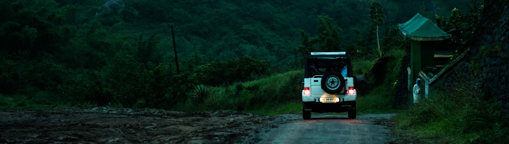

“It is better to see something once than to hear about it a thousand times.”
Kerala
National Geographic's Traveller magazine listed Kerala in the 'Ten Paradises of the World' and '50 must visit places of a lifetime'. Being a coastal region rich in greenery and with a unique culture, the state has attracted tourists from across the globe since time immemorial. But more often than not, tourists are finding themselves grappling with situations wherein they are unable to choose their destinations or struggle to get proper accommodation owing to shortage of local information and such other
Keralatravels.com aims at making everything pertaining to travel&tourism easy for travel enthusiasts who come to Kerala. The site comprises information on a range of topics: the destination, conveyance options, accommodation, weather, local specialities and what not. One need not look further than this website to equip oneself for a most delightful vacation! Often, those wishing to go on a holiday would like prior information on the distance, accessibility and climate of the place they wish to travel to. One would also like to have a look at various options for celebrating a holiday. Kerala travels.com covers it all. The site provides detailed information on house boating, kerala cuisine, health packages, ayurvedic treatment, wildlife tourism, adventure & eco travel, pilgrimage destinations etc, covering all resources that are available across the state.
Top Destinations
-

Cochin
The Queen of Arabian Sea, Cochin is one of the top places to see in Kerala. The coastal city has a legacy of history that traces back to the first colonialists who landed on the shores. Beaches, Museums, Churches, modern tourist delights, there is so much for travelers to explore. The multi-ethnic heritage of the city is reflected in its tourist sights, food, shopping and every aspect of the town.